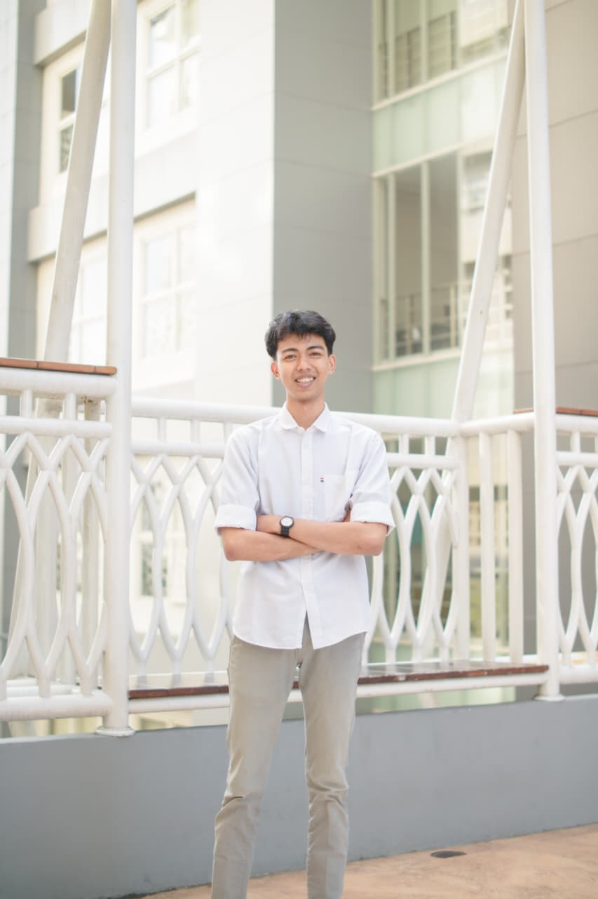

Fresh Graduate Matematika · Data Analyst · Machine Learning Enthusiast
Membangun solusi berbasis data dengan fondasi matematika yang kuat. Bergairah dalam mengubah angka menjadi wawasan (insight) yang bermakna.

Saya adalah seorang fresh graduate dari program studi Matematika, dengan fokus yang kuat pada bidang Data Analyst dan Machine Learning. Selama masa perkuliahan, saya tidak hanya mendalami teori matematika murni, tetapi juga aktif menerapkannya dalam konteks analisis data modern.
Semangat saya adalah membangun jembatan antara matematika formal dan solusi dunia nyata — menggunakan model prediktif, visualisasi data, dan algoritma machine learning untuk menghasilkan keputusan yang lebih cerdas berbasis data.
Di luar akademis, saya aktif berorganisasi di HIMATIKA (Himpunan Mahasiswa Matematika), di mana saya mengasah kemampuan kepemimpinan, manajemen tim, dan pengembangan sumber daya manusia.
Mengajar Privat · Mandiri
Aktif sebagai guru private Matematika sejak tahun 2021 hingga sekarang. Memberikan bimbingan belajar Matematika secara personal kepada siswa dari berbagai jenjang pendidikan, mulai dari SD hingga SMA. Membantu siswa memahami konsep-konsep dasar hingga materi lanjutan dengan metode yang disesuaikan dengan kebutuhan masing-masing siswa.
Pusat Studi Data Science · 2025
Berperan sebagai tentor pada program PSDS 9.0 (Pusat Studi Data Science), menyampaikan materi Machine Learning menggunakan metode CNN (Convolutional Neural Network) kepada peserta program. Seluruh materi pembelajaran yang digunakan tersedia secara publik di GitHub.
Divisi Pengembangan Bakat dan Sumber Daya Mahasiswa (PBSDM)
Berperan sebagai anggota aktif di divisi PBSDM, mendukung pelaksanaan program pelatihan dan pengembangan potensi mahasiswa Matematika di lingkungan kampus. Berkontribusi dalam merancang dan menjalankan berbagai kegiatan yang mendorong kompetensi akademik dan non-akademik mahasiswa.
Divisi Pengembangan Bakat dan Sumber Daya Mahasiswa (PBSDM)
Dipercaya menjabat sebagai Sekretaris Divisi PBSDM — bertanggung jawab atas pengelolaan administrasi divisi, penyusunan laporan kegiatan, notulensi rapat, dan koordinasi komunikasi internal. Berkontribusi dalam pengambilan keputusan strategis divisi untuk mendorong pengembangan mahasiswa.
Proyek terbaru yang saya kerjakan — dari riset akademis hingga implementasi Machine Learning.
Studi komparatif sistematis yang mengevaluasi 4 algoritma optimasi (Adam, AdamW, NAdam, RMSprop) pada 6 arsitektur CNN (EfficientNet, ResNet50V2, Xception) untuk klasifikasi Acute Lymphoblastic Leukemia (ALL) dari citra apusan darah tepi.
Top Accuracy per Arsitektur
Unduh CV saya untuk melihat pengalaman, keahlian, dan pencapaian secara lengkap dalam format PDF.
Tertarik untuk berkolaborasi atau memiliki peluang kerja? Jangan ragu untuk menghubungi saya!